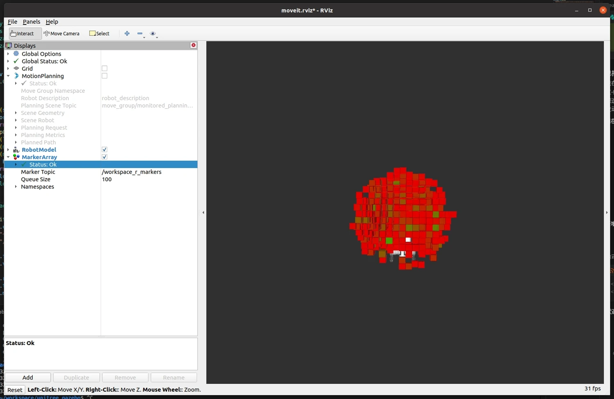
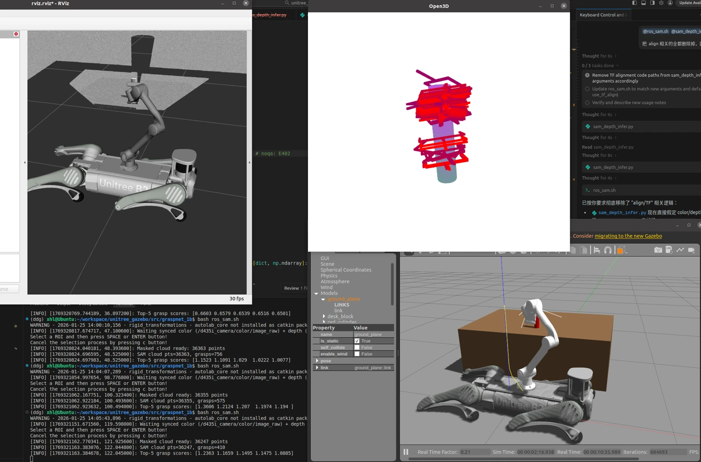

Locomotion · Mobile Manipulation
足式机器人控制与移动操作
围绕足式机器人的运动控制与操作能力，开展 OpenDuck 双足步态学习和实机迁移，以及宇树 B2 四足机器人搭载 Z1 六轴机械臂的移动操作系统开发。双足完成仿真与实机验证；四足系统在 Isaac Gym 中训练，并在 Gazebo 中完成感知、导航和抓取集成验证。
演示
方法与实践
双足步态学习与实机迁移
完成 OpenDuck 双足机器人硬件搭建与强化学习控制实践，采用 PPO 训练步态策略，完成仿真验证及实机部署。仿真与实机演示分别展示策略驱动下的双足运动。
四足全身控制与速度跟随
基于 B2 四足机器人与 Z1 六轴机械臂构建移动操作仿真系统，采用 PPO 实现全身控制（WBC）与行走速度跟随。策略观测包含机身姿态、腿部与机械臂关节状态、足端接触、速度指令及末端位姿，使腿部控制能够响应机械臂运动带来的状态变化。
在 Isaac Gym 中训练腿部关节控制策略，结合速度跟随、机身姿态与高度约束，以及能耗、动作变化和加速度惩罚。机械臂通过采样有效末端轨迹并求解逆运动学运动，在训练中引入臂部姿态变化；系统随后在 Gazebo 中集成验证。
目标感知与视觉伺服
结合 YOLOv8 目标检测、XMem 分割与跟踪，以及深度观测获取目标三维位置。采用基于图像的视觉伺服（IBVS），根据目标在图像中的位置误差调整腕部相机视角，在移动过程中维持目标可见性；视觉伺服主要作用于机械臂末端三个关节。
考虑机械臂可达性的导航与抓取
根据机械臂运动学和灵巧度约束构建可达工作空间，结合实时目标位置采样底盘候选位姿，筛选可达且无碰撞的导航目标。目标位姿随观测更新，并由 DWA 局部规划器输出速度指令，驱动四足机器人移动到适合操作的位置。
到达工作区域后，利用 GraspNet 从目标点云生成六自由度抓取位姿，结合 MoveIt 完成轨迹规划，在 Gazebo 中执行抓取。系统完成多个类别物体的导航与抓取验证，覆盖视觉跟踪、底盘接近、抓取生成与执行全过程。



